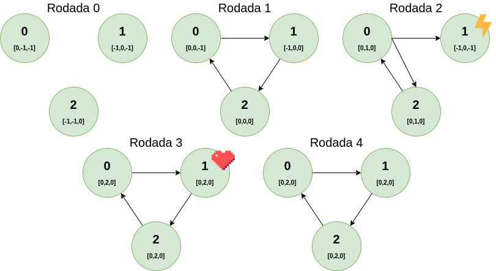

Especificação: Implemente o algoritmo VRing no ambiente de simulação SMPL, e mostre resultados para diversos valores de N e diversos eventos - um evento em um processo de cada vez, um evento só ocorre depois do evento anterior ser diagnosticado. Para cada evento mostre claramente o número de testes executados e a latência para completar o diagnóstico do evento. Cada nodo mantém o vetor STATE[0..N-1] de contadores de eventos, inicializado em -1 (estado “unknown”). Assume-se que os processos são inicializados sem-falha, a entrada correspondente ao próprio processo no vetor STATE[] do testador é setada para zero. Ao descobrir um novo evento em um nodo testado, o testador incrementa a entrada correspondente no vetor STATE[].
Para a transferência de informações de diagnóstico lembre-se da estratégia do VRing: quando um processo sem-falha testa outro processo sem-falha obtém informações sobre os estados de todos os processos que não testou no intervalo de testes corrente. É importante comparar as entradas correspondentes dos vetores STATE (testador e testado) para saber se o testado tem alguma novidade. Se o valor da entrada for maior no vetor STATE do processo testado, então copia a informação.
O código foi escrito a partir do código da tarefa4.c do Trabalho Prático 0. As seguintes alterações foram realizadas para cumprir os requisitos do Trabalho Prático 1:
Este teste foi executado para 3 processos, com o tempo máximo de simulação de 100. Os eventos agendados foram:
O estado de cada processo durante as rodadas pode ser visualizado na imagem abaixo:
O log deste teste pode ser visualizado abaixo:
{% highlight plaintext %} Este programa foi executado para N=3 processos O tempo maximo de simulacao e de 100 ****************************************** Iniciando round de testes 1 ========================================== Iniciando testes do processo 0 State do processo 0: 0[0] 1[-1] 2[-1] Processo 0 testou processo 1 no tempo 30.0: correto State[1] atualizado para 0 Atualizando state do processo 0 com o state do processo 1 State do processo 1: 0[-1] 1[0] 2[-1] Nenhuma transferencia realizada State do processo 0: 0[0] 1[0] 2[-1] ========================================== ========================================== Iniciando testes do processo 1 State do processo 1: 0[-1] 1[0] 2[-1] Processo 1 testou processo 2 no tempo 30.0: correto State[2] atualizado para 0 Atualizando state do processo 1 com o state do processo 2 State do processo 2: 0[-1] 1[-1] 2[0] Nenhuma transferencia realizada State do processo 1: 0[-1] 1[0] 2[0] ========================================== ========================================== Iniciando testes do processo 2 State do processo 2: 0[-1] 1[-1] 2[0] Processo 2 testou processo 0 no tempo 30.0: correto State[0] atualizado para 0 Atualizando state do processo 2 com o state do processo 0 State do processo 0: 0[0] 1[0] 2[-1] Novidade encontrada, transferindo state[1]... State[1] atualizado para 0 State do processo 2: 0[0] 1[0] 2[0] ========================================== --> Event[1]: Processo 1 falhou no tempo 31.0 ****************************************** Iniciando round de testes 2 ========================================== Iniciando testes do processo 0 State do processo 0: 0[0] 1[0] 2[-1] Processo 0 testou processo 1 no tempo 60.0: falho State[1] atualizado para 1 Event[1] testado pelo processo 0 Event[1] descoberto pelo processo 0 Processo 0 testou processo 2 no tempo 60.0: correto State[2] atualizado para 0 Atualizando state do processo 0 com o state do processo 2 State do processo 2: 0[0] 1[0] 2[0] Nenhuma transferencia realizada State do processo 0: 0[0] 1[1] 2[0] ========================================== ========================================== Iniciando testes do processo 2 State do processo 2: 0[0] 1[0] 2[0] Processo 2 testou processo 0 no tempo 60.0: correto Atualizando state do processo 2 com o state do processo 0 State do processo 0: 0[0] 1[1] 2[0] Novidade encontrada, transferindo state[1]... State[1] atualizado para 1 Event[1] descoberto pelo processo 2 --> Diagnostico do evento 1 completo State do processo 2: 0[0] 1[1] 2[0] ========================================== --> Event[2]: Processo 1 recuperou no tempo 61.0 ****************************************** Iniciando round de testes 3 ========================================== Iniciando testes do processo 0 State do processo 0: 0[0] 1[1] 2[0] Processo 0 testou processo 1 no tempo 90.0: correto State[1] atualizado para 2 Event[2] testado pelo processo 0 Event[2] descoberto pelo processo 0 Atualizando state do processo 0 com o state do processo 1 State do processo 1: 0[-1] 1[2] 2[-1] Nenhuma transferencia realizada State do processo 0: 0[0] 1[2] 2[0] ========================================== ========================================== Iniciando testes do processo 2 State do processo 2: 0[0] 1[1] 2[0] Processo 2 testou processo 0 no tempo 90.0: correto Atualizando state do processo 2 com o state do processo 0 State do processo 0: 0[0] 1[2] 2[0] Novidade encontrada, transferindo state[1]... State[1] atualizado para 2 Event[2] descoberto pelo processo 2 --> Diagnostico do evento 2 completo State do processo 2: 0[0] 1[2] 2[0] ========================================== ========================================== Iniciando testes do processo 1 State do processo 1: 0[-1] 1[2] 2[-1] Processo 1 testou processo 2 no tempo 91.0: correto State[2] atualizado para 0 Atualizando state do processo 1 com o state do processo 2 State do processo 2: 0[0] 1[2] 2[0] Novidade encontrada, transferindo state[0]... State[0] atualizado para 0 State do processo 1: 0[0] 1[2] 2[0] ========================================== ****************************************** Iniciando round de testes 4 ========================================== Iniciando testes do processo 0 State do processo 0: 0[0] 1[2] 2[0] Processo 0 testou processo 1 no tempo 120.0: correto Atualizando state do processo 0 com o state do processo 1 State do processo 1: 0[0] 1[2] 2[0] Nenhuma transferencia realizada State do processo 0: 0[0] 1[2] 2[0] ========================================== ****************************************** Simulacao encerrada ========================================== Eventos durante a simulacao: Event[1]: FALHA | round 1 | tempo 031.0 | processo 1 | numero de testes de 1 | latencia de 1 Event[2]: RECUP | round 2 | tempo 061.0 | processo 1 | numero de testes de 1 | latencia de 1 ========================================== Programa finalizado com sucesso Autor: Giovanni Rosa :) ========================================== {% endhighlight %}